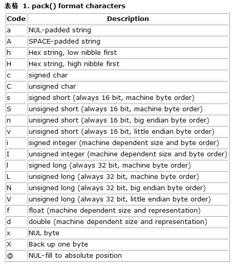

Php-007深入pack和unpack
PHP作为一门为web而生的服务器端开发语言，被越来越多的公司所采用。其中不乏大公司，如腾迅、盛大、淘米、新浪等。在对性能要求比较高的项目中，PHP也逐渐演变成一门前端语言，用于访问后端接口。或者不同项目之间需要共享数据的时候，通常可以抽取出数据层，通过PHP来访问。
写在前面的话
本文介绍的是通过二进制数据包的方式通信，演示语言为PHP和Golang。PHP提供了pack/unpack函数来进行二进制打包和二进制解包。在具体讲解之前，我们先来了解一些基础知识。
什么是字节序
在不同的计算机体系结构中，对于数据(比特、字节、字)等的存储和传输机制有所不同，因而引发了计算机领域中一个潜在但是又很重要的问题，即通信双方交流的信息单元应该以什么样的顺序进行传送。如果达不成一致的规则，计算机的通信与存储将会无法进行。目前在各种体系的计算机中通常采用的字节存储机制主要有两种：大端(Big-endian)和小端(Little-endian)。这里所说的大端和小端即是字节序。
MSB和LSB
-
MSB是Most Significant Bit/Byte的首字母缩写，通常译为最重要的位或最重要的字节。它通常用来表示在一个bit序列(如一个byte是8个bit组成的一个序列)或一个byte序列(如word是两个byte组成的一个序列)中对整个序列取值影响最大的那个bit/byte。
-
LSB是Least Significant Bit/Byte的首字母缩写，通常译为最不重要的位或最不重要的字节。它通常用来表明在一个bit序列(如一个byte是8个bit组成的一个序列)或一个byte序列(如word是两个byte组成的一个序列)中对整个序列取值影响最小的那个bit/byte。
-
对于一个十六进制int类型整数0x12345678来说，0x12就是MSB，0x78就是LSB。而对于0x78这个字节而言，它的二进制是01111000，那么最左边的那个0就是MSB，最右边的那个0就是LSB。
大端序
大端序又叫网络字节序。大端序规定高位字节在存储时放在低地址上，在传输时高位字节放在流的开始；低位字节在存储时放在高地址上，在传输时低位字节放在流的末尾。
小端序
小端序规定高位字节在存储时放在高地址上，在传输时高位字节放在流的末尾；低位字节在存储时放在低地址上，在传输时低位字节放在流的开始。
网络字节序
网络字节序是指大端序。TCP/IP都是采用网络字节序的方式，java也是使用大端序方式存储。
主机字节序
主机字节序代表本机的字节序。一般是小端序，但也有一些是大端序。
主机字节序用在协议描述中则是指小端序。
总结
字节序只针对于多字节类型的数据。比如对于int类型整数0x12345678，它占有4个字节的存储空间，存储方式有大端(0x12, 0x34, 0x56, 0x78)和小端(0x78, 0x56, 0x34, 0x12)两种。可以看到，在大端或小端的存储方式中，是以字节为单位的。所以对于单字节类型的数据，不存在字节序这个说法。
pack/unpack详解
PHP pack函数用于将其它进制的数字压缩到位字符串之中。也就是把其它进制数字转化为ASCII码字符串. 
格式字符翻译
a -- 将字符串空白以 NULL 字符填满
A -- 将字符串空白以 SPACE 字符 (空格) 填满
h -- 16进制字符串，低位在前以半字节为单位
H -- 16进制字符串，高位在前以半字节为单位
c -- 有符号字符
C -- 无符号字符
s -- 有符号短整数 (16位，主机字节序)
S -- 无符号短整数 (16位，主机字节序)
n -- 无符号短整数 (16位, 大端字节序)
v -- 无符号短整数 (16位, 小端字节序)
i -- 有符号整数 (依赖机器大小及字节序)
I -- 无符号整数 (依赖机器大小及字节序)
l -- 有符号长整数 (32位，主机字节序)
L -- 无符号长整数 (32位，主机字节序)
N -- 无符号长整数 (32位, 大端字节序)
V -- 无符号长整数 (32位, 小端字节序)
f -- 单精度浮点数 (依计算机的范围)
d -- 双精度浮点数 (依计算机的范围)
x -- 空字节
X -- 倒回一位
@ -- 填入 NULL 字符到绝对位置
格式字符详解
pack/unpack允许使用修饰符*和数字，紧跟在格式字符之后，用于指定该格式的个数；
a和A都是用来打包字符串的，它们的唯一区别就是当小于定长时的填充方式。a以NULL填充，NULL事实上是'\0’的表示，代表空字节，8个位上全是0。A以空格填充，空格也即ASCII码为32的字符。这里有一个关于填充的使用场景的例子：请求登录的数据包规定用户名不超过20个字节，密码经过md5加密后是固定的32个字节。用户名就是变长的，为了便于服务器端读取和处理，通常会填充成定长。当然，这只是使用的方式之一，事实上还可以用变长的方式传递数据包，但这不在本文的探讨范围内。字符串有一点麻烦的是编码问题，尤其是在跟不同的平台通信时更为突出。比如在用pack进行打包字符串时，事实上是将字符内部的编码打包进去。单字节字符就没有问题，因为单字节在所有平台上都是一致的。来看个例子(pack.php)：
|
|
|
|
bin是返回的二进制字符，您可以直接输出它，PHP知道如何处理。通过bin2hex方法将bin转换成十六进制可以知道，十六进制0x64表示的是字符d。对于中文字符(多字节字符)来说，通常有GBK编码、BIG5编码以及UTF8编码等。比如在GBK编码中，一个中文字符采用2个字节来表示；在UTF8编码中，一个中文字符采用3个字节来表示。这通常需要协商采用统一的编码，否则会由于内部的表示不一致导致无法处理。在PHP中只要将文件保存为特定的编码格即可，其它语言可能跟操作系统相关，因此或许需要编码转换。本文的例子一概基于UTF8编码。继续来看个例子：
|
|
|
|
您可能会觉得很奇怪，后面2个输出是一样的。ASCII码表示单字节字符(其中包括英文字母、数字、英文标点符号、不可见字符以及控制字符等等)，它总是小于0x80，即小于十进制的128。当在处理字符时，如果字节小于0x80，则把它当作单字节来处理，否则会继续读取下一个字节，这通常跟编码有关，GBK会将2个字节当成一个字符来处理，UTF8则需要3个字节。有时候在PHP中需要做类似的处理，比如计算字符串中字符的个数(字符串可能包含单字节和多字节)，strlen方法只能计算字节数，而mb_strlen需要开启扩展。类似这样的需求，其实很容易处理：
|
|
|
|
以上代码的实现就是利用单字节字符的ASCII码小于0x80。至于要跳过几个字节，这要看具体是什么编码。接下来通过例子来看看a和A的区别：
$GOPATH/src
—-pack_test
——–main.go
main.go的源码(只是用于测试，没有考虑细节)：
|
|
代码很简单，收到数据，然后输出。
pack.php
|
|
|
|
|
|
当执行php后，可以看到服务器端在控制台输出：
|
|
以上的输出中，单引号不是数据的一部分，只是为了便于观察。很明显，我们打包的字符串只占12字节，a20表示20个a，您当然可以连续写20个a，但我想您不会这么傻。如果是a*的话，则表示任意多个a。通过服务器端的输出来看，PHP发送了20个字节过去，服务器端也接收了20个字节，但因为填充的\0是空字符，所以您不会看到有什么不一样的地方。现在我们将a20换成A20，代码如下：
|
|
|
|
您会发现服务器端的输出不一样了：
|
|
是的，空格存在于数据中。这就是a和A的区别。
h和H的描述看起来有些奇怪。它们都是读取十进制，以十六进制方式读取，以半字节(4位)为单位。这听起来有些拗口，还是以实例来说明：
|
|
|
|
首先是读取十进制，所以0x5会转成十进制的5，然后以半字节为单位并且以十六进制方式读取，为了补足8位，所以需要在5后面补0，变成0x50。别忘了十六进制的一位相当于二进制的四位。0x50正好是字符P的ASCII码。
|
|
h和H的差别在于h是低位在前，H是高位在前，拿前面的例子来看看h的行为：
|
|
读取十进制的5，后面补0，变成十六进制的0x50，因为H是高位在前，所以没有变化，而h就需要将0x50变成0x05。由于0x05是不可见字符，所以上面的字符输出是空的。
h和H是以半字节为单位，h2和H2则表示一次读取8位，同理h3和H3可以推导出来，但是别忘了补足8位哦！
|
|
以上的代码中，0x47为十进制的71，因为读取半个字节，所以变成0x7，后面补0变成0x70，则刚好是字符p的ASCII码。如果换成是h格式化，则最终的结果是0x07，因为低位在前。
对于一次读取多个字节，也以同样的规则：
|
|
0x47是十进制的71，由于使用H2格式化，所以一次读取8位，最后变成十六进制的0x71，即字符q的ASCII码。0x56是十进制的86，由于使用h2格式化，所以一次读取8位，最后变成十六进制的0x86，但是由于h表示低位在前，因此0x86变成0x68，即字符h的ASCII码。
c和C都表示字符，前者表示有符号字符，后者表示无符号字符。
|
|
s为有符号短整数；S为无符号短整数。它们都为主机字节序，并且为16位。通常为主机字节序的格式化字符，一般只用于单机的操作，因为您无法确定主机字节序究竟是大端还是小端。当然，您一定要这么干的话，也是有办法来获取本机字节序是属于大端或小端，但那样是没有必要的。稍后就会给出一个通过PHP来判断字节序的例子。
|
|
n和v除了明确指定了字节序，其它行为跟s和S是一样的。
i和I依赖于机器大小及字节序，很少用它们。
l、L、N、V跟s、S、n、v类似，除了表示的大小不同，前者都为32位，后者都为16位。
f、d是因为float和double与CPU无关。一般来说，编译器是按照IEEE标准解释的，即把float/double看作4/8个字符的数组进行解释。因此，只要编译器是支持IEEE浮点标准的，就不需要考虑字节顺序。
剩下的x、X和@用得比较少，对此不作深究。
unpack的用法
unpack是用来解包经过pack打包的数据包，如果成功，则返回数组。其中格式化字符和执行pack时一一对应，但是需要额外的指定一个key，用作返回数组的key。多个字段用/分隔。例如：
|
|
一些例子
判断大小端
|
|
网络通信
比如现在要通过PHP发送数据包到服务器来登录。在仅需要提供用户名(最多30个字节)和密码(md5之后固定为32字节)的情况下，可以构造如下数据包(当然这事先需要跟服务器协商好数据包的规范，本例以网络字节序通信)：
包结构：
| 字段 | 字节数 | 说明 |
|---|---|---|
| 包头 | 定长 | 每一个通信消息必须包含的内容 |
| 包体 | 不定长 | 根据每个通信消息的不同产生变化 |
其中包头详细内容如下：
| 字段 | 字节数 | 类型 | 说明 |
|---|---|---|---|
| pkg_len | 2 | ushort | 整个包的长度，不超过4K |
| version | 1 | uchar | 通讯协议版本号 |
| command_id | 2 | ushort | 消息命令ID |
| result | 2 | short | 请求时不起作用；请求返回时使用 |
当然实际中可能会涉及到各种校验。本文为了简单，只是列举一下通常的工作流程及处理的方式。
登录(执行命储1001)
| 字段 | 字节数 | 类型 | 说明 |
|---|---|---|---|
| 用户名 | 30 | uchar[30] | 登录用户名 |
| 密码 | 32 | uchar[32] | 登录密码 |
包头是定长的，通过计算可知包头占7个字节，并且包头在包体之前。比如用户陈一回需要登录，密码是123456，则代码如下：
|
|
服务器端通过读取定长包头，拿到包体长度，再读取并解析包体。大致的过程就是这样。当然服务器端也会返回响应包，客户端做相应的读取处理。